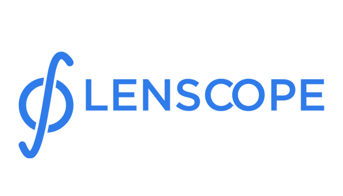

As melhores lentes você encontra aqui!
Informe os valores do seu grau esférico
Olho esquerdo -
Olho direito -
Informe os valores do seu grau cilíndrico
Olho esquerdo -
Olho direito -
Calcule aqui
Limpar
Vamos encontrar a lente ideal para você !